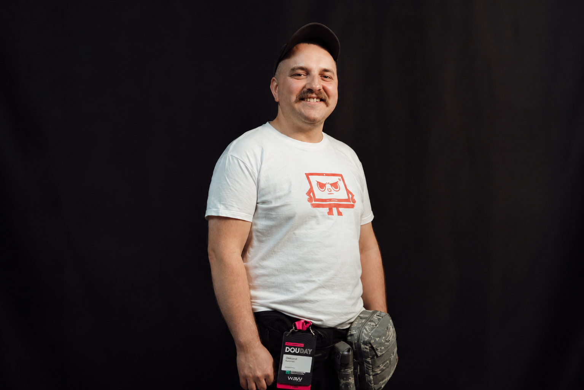
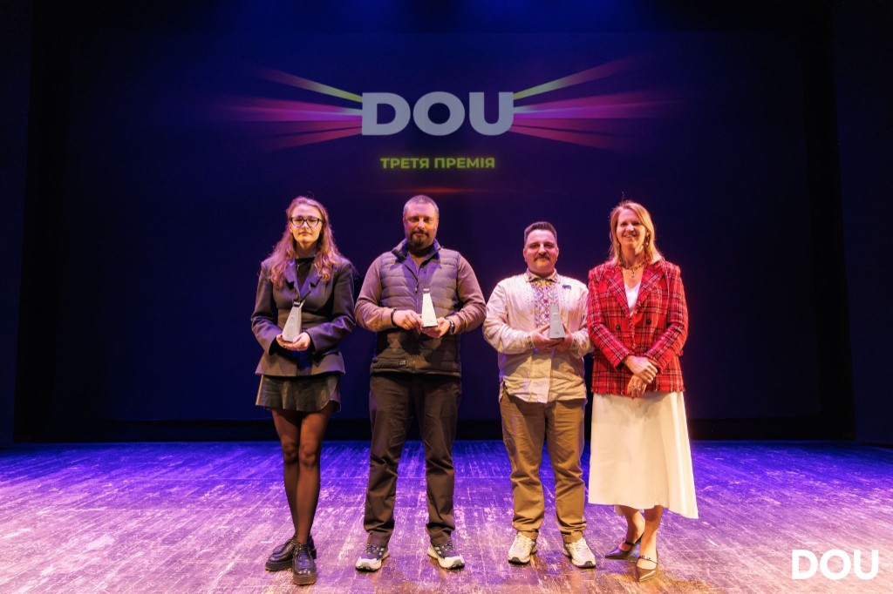

A production event
A boring routine
Automated workflows, clear validation, practical rollback paths, and ownership that survives handovers.
Engineering leadership for systems that matter
I’m Oleksandr Khotemskyi — an engineering leader with deep quality roots. I turn fragile delivery into calm releases, unclear ownership into working systems, and AI hype into practical engineering leverage.

A release should not be an event. It should be a quiet consequence of a system that works.
I started in software quality more than fifteen years ago. That gave me a useful instinct: look for the way a system can fail before it becomes someone else’s emergency.
Over time, the scope grew. Test automation became delivery architecture. Release checklists became operational design. Incident calls became on-call systems, observability, ownership, and faster recovery.
The job was never “find more bugs.” It was to help engineering ship with confidence — and recover without panic when reality disagrees with the plan.
I inherited a process built around chat messages, manual confirmation, and anxiety. We rebuilt it into a calm, documented workflow that needs minutes of attention — not a room full of people.
Automated workflows, clear validation, practical rollback paths, and ownership that survives handovers.
On-call rotation, access by responsibility, escalation, status communication, postmortems, and prevention work.
Cost-aware CI/CD, testing infrastructure, and vendor decisions designed around outcomes — not platform fashion.
I’m not an ML researcher. I’m an experienced integrator: I connect existing AI capabilities to the places where engineers lose time, context, and attention.
Purpose-built helpers for repeatable engineering tasks, with real context and clear guardrails.
Practical workflows for coding, investigation, documentation, test design, and requirements analysis.
Turning personal experiments into shared processes that engineers can trust, inspect, and improve.
Start with the bottleneck, measure the gain, keep humans accountable, and drop what does not help.
I founded CyborgTests: a Playwright-native way to keep human judgment inside an automated test. Not a second tool. Not AI theatre. A pause where eyes still matter — then the run continues.

Some checks cannot be fully scripted — layout, video, the odd case that still needs a person. CyborgTests lets a test run to that point, wait for a human, and continue. One flow, one report.
DOU Awards 2026 Winner — Startup with the Biggest Potential.Hot Testing grew from a small Protractor.js group into a recognized Ukrainian quality engineering community. It taught me how to lead without authority: earn trust, explain hard things clearly, and keep showing up.
This is not a side-note. Community work is proof that I can create momentum across teams, levels, and companies — and translate deep technical ideas into action.
My career also includes two environments where consequences are immediate: military service and intensive care. They changed how I think about clarity, responsibility, and the people on the other side of a system.
Served as a soldier during the full-scale invasion, formally in a medical role, including service in the Bakhmut area. Worked with coordination, records, accountability, and logistics in a chaotic operational environment. Combatant status (UBD).
Medical diploma as a junior specialist in nursing, followed by six months working in intensive care in Kyiv with postoperative and emergency patients.
I lead through systems thinking and technical credibility. I can read the code, follow the request, inspect the pipeline, challenge the release plan, and work with specialists without pretending to replace them.
Why this matters
Not by pretending to be an embedded engineer. By helping software-heavy products and engineering teams where failure has real cost become more reliable, more observable, faster to improve, and easier to operate under pressure.
I bring engineering discipline without bureaucracy — and urgency without chaos.
Beyond full-time work, I take on a limited number of engagements: helping individual engineers grow, training teams on their own stack, reviewing what you already built, and planning where the product goes next.
Price is agreed after a short intro call — no packages, no sales process.
Free for veterans and serving military — mentoring and consultations, as a volunteer.
The shortest section
If you are building technology where reliability has real consequences, I would like to hear what you are working on. Looking for mentoring, team training, or a review? See what I offer.
Message me on WhatsApp